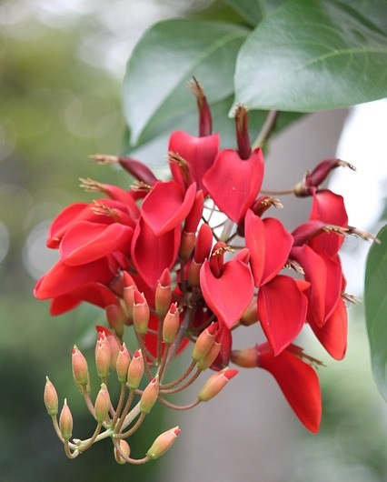

SOBRE NOSOTROS
NOSOTROS SOMOS UNA EMPRESA PEQUEÑA NACIONAL ,FUNDADA EN 2018.NOS ESPECIALIZAMOS PRINCIPALMENTE EN LAS PLANTAS, FLORES DEL MUNDO.SUS DATOS,INFORMACION SECRETA, TODO LO RELACIONADO A LA MARAVILLA COLORIDA QUE LA NATURALEZA NOS REGALÓ. EN UNA NUEVA EDICION ABRIREMOS LAS INSCRIPCIONES PARA RECLUTAR MAS GENTE EN NUESTRA EMPRESA. ESPERAMOS QUE NUESTRAS INVESTIGACIONES REALIZADAS POR NUESTRA ADMIRACION LES GUSTE O PAREZCA ENTRETENIDO E INFORMATIVO
PLANTAS
EN ESTA SECCIÓN SE VERÁ TODO LO RELACIONADO A LAS PLANTAS COMO POR EJEMPLO: DEFINICIONES ,INVESTIGACIONES, FOTOS, “LAS PLANTAS MÁS COMUNES DE ARGENTINA”, TIPOS, ETC. HAZ CLICK AQUÍ PARA SABER MÁS AL RESPECTO
FLORES
EN ESTA SECCIÓN SE VERÁ TODO LO RELACIONADO A LAS FLORES DEL PAÍS COMO, POR EJEMPLO: "LAS FLORES MÁS COMUNES DE ARGENTINA”, DEFINICIÓN, Y LOS TIPOS DE FLORES, FLORERÍAS DE BUENOS AIRES , ETC. HAZ CLICK AQUÍ PARA SABER MÁS AL RESPECTO
IMAGENES DE PLANTAS Y FLORES PROPIAS

NUESTRAS IMAGENES SON 100% NUESTRAS, YA QUE TENEMOS UN EQUIPO DE FOTOGRAFIA, Y SU TRABAJO PRINCIPAL ES FOTOGRAFIAR LAS PLANTAS Y LAS TOMAS MAS HERMOSAS QUE LA NATURALEZA NOS PUEDE BRINDAR. INCLUSO CUANDO EL EQUIPO VIAJA A OTRAS PROVINCIAS O PAISES, BUSCA SACAR HERMOSAS FOTOS DE PLANTAS O FLORES Y LUEGO DECIFRAR COMO SE LLAMA Y TRABAJAR CON ESTA BELLEZA NATURAL
DEFINICION
A parte de ser lo que todos sabemos, algo muy lindo de ver incluso de lejos, las flores son la parte de las plantas (no todas las plantas tienen flores) encargada de la reproducción. La palabra FLOR tiene un origen en el latín, “FLOS”, pero también en en la raíz indoeuropea “BHLĒ” que significa florecer.
¿POR QUE EL 22 DE NOVIEMBRE ES EL DIA DE LA FLOR NACIONAL?
La flor de ceibo fue declarada flor nacional argentina por decreto del poder ejecutivo nacional el 22 de diciembre de 1942. (resultado de una encuesta realizada por un diario, en la cual participaron 20 mil personas). Por la vistosidad de sus flores actualmente se encuentran cultivadas en paseos, parques y plazas. Dato== también fue declarada “FLOR NACIONAL” en Uruguay. Su nombre Erythrima viene del griego “Erythros”== “Rojo”. Su nombre especifico es “Crista-galli” Su nombre completo, entonces es: “Erythrima crista-galli”. El árbol de estas hermosas flores es originario de América, (especialmente de Argentina litoral),Uruguay, Brasil y Paraguay.
DEFINICION
Mientras realizaba mi investigación encontré varios, pero en todos empezaba de la misma forma “las plantas son SERES VIVOS, miembros del reino vegetal…organismos autótrofos desprovistos de la capacidad de movimiento y están compuestos principalmente de celulosa. Las plantas que hoy en día son muy común de ver, en realidad son descendientes de las primeras algas eucarióticas y fotosintéticas que aparecieron por primera vez hace mas de 1500 millones de años. Pero a parte de esta información que somos capaces de deducir, las plantas son más que simples “seres vivos”, ya que estas creaciones naturales no necesitan alimentarse de otros seres vivos con el objetivo de obtener energía vital para poder sobrevivir (es mas en varios casos son la comida principal de todos tipos de animales).
¿POR QUE SE HABLA TANTO DEL JACARANDA EN LAS ESCUELAS ARGENTINAS?
Este árbol que de seguro todos escuchamos su nombre alguna vez , ya sea en la escuela, en la ciudad bonaerense , o en las provincias. Pues bien te lo presento por si no lo conocía o si lo conocías te comento algunos datos interesantes de esta planta ,que tiene enamorada a toda la argentina. La historia de este árbol empieza cuando Carlos Thays (paisajista,arquitecto y urbanista, 1849-1934) Incorporo esta belleza en el paisaje porteño, a fines del siglo XIX. Su nombre científico es Jacaranda mimosifolia, el nombre de esta planta se declara que es tupí y significa “Fragante”. Es nativo de las selvas de montaña del noroeste argentino Como el árbol se encuentra en todas partes del país (pero mas en las ciudades), cuando llega la primavera, las calles se tiñen de lila. (esto sucede entre los meses de noviembre y diciembre) Este árbol es de “rápido crecimiento” ya que en tan solo 5 a 7 años de vida ya puede considerarse un adulto puede llegar a medir hasta casi sobrepasar los 25 mt de altura. Aunque la mayoría solo llega a medir entre 12 y 15 mt. En las escuelas suele hablarse de este árbol ya que como bien mencionamos se encuentra en grandes cantidades en la ciudad bonaerense y en otras provincias. Por lo cual, se consideraría un árbol muy especial, tanto para el país como para la tierra en si.